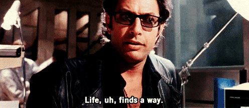
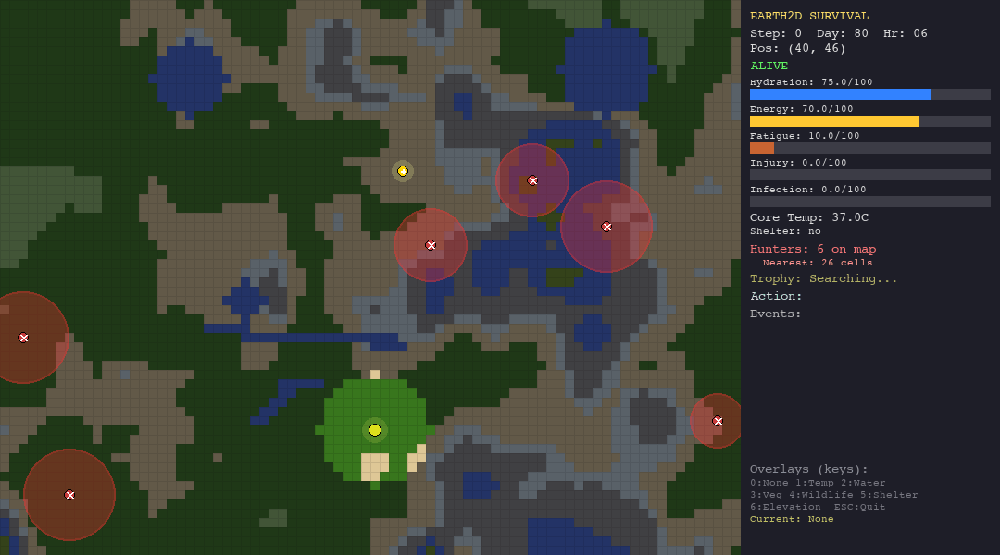
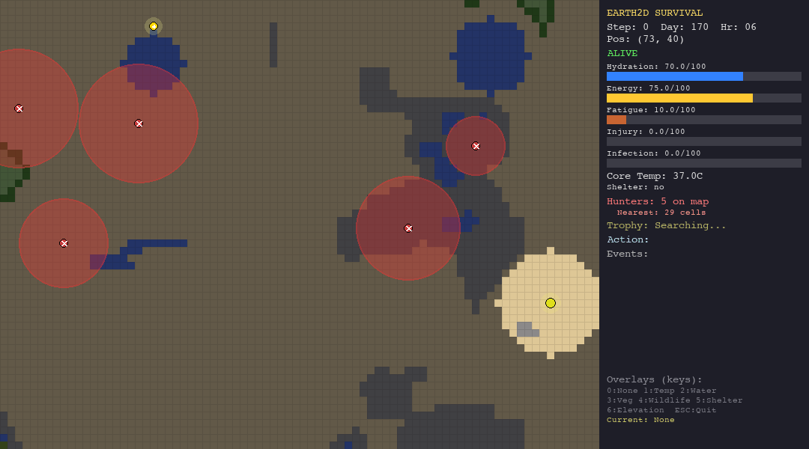
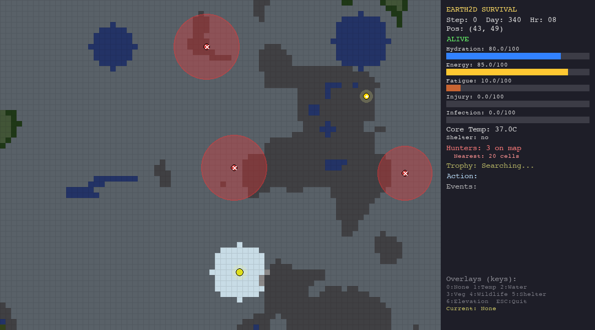
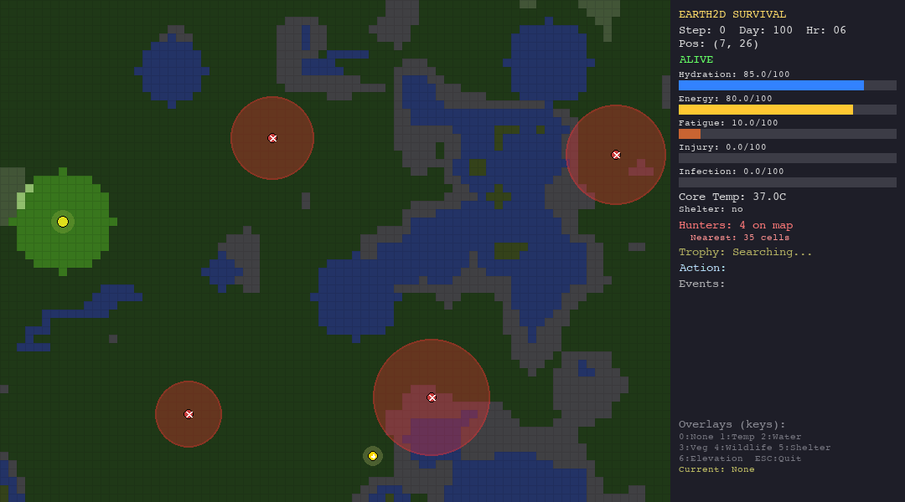

Can LLMs Survive in the Wild?
What happens when you drop a language model into a hostile procedurally generated world and ask it to not die? Turns out, survival is a remarkably good test of intelligence.
The Problem with Benchmarks
We keep testing LLMs the way we test students: multiple choice questions, coding puzzles, and math problems, and whatever the hot fudge humanity’s last exam is. But intelligence as it has evolved in the real world is not about answering questions, it is about staying alive.
Indeed the real test of any intellegence is just finding a way to stay alive.

An organism in the wild must continuously perceive threats, manage scarce resources, plan escape routes, and pursue long-term goals—all at the same time. There is no “correct answer” to look up. There is only the next decision, and if you get it wrong, you are dead.
That is the core idea behind Earth-33: a 2D survival simulation where agents: LLMs, hand-crafted heuristics, and bio-inspired swarm algorithms, are dropped into procedurally generated worlds and evaluated on a single, unforgiving metric: how long can you stay alive?
What Is Earth-33?
Earth-33 is a simulation framework built in Python that models realistic survival pressure across multiple interconnected systems:
- Procedural terrain with 7 biome types (plains, forest, desert, tundra, mountain, water, swamp)
- Dynamic climate with seasonal and diurnal temperature cycles, elevation-based lapse rates
- Organism physiology tracking hydration, energy, core temperature, fatigue, injury, and infection
- Hunter NPCs that patrol the map with hidden detection radii, chase on sight, and kill on contact
- A hidden trophy that the agent must find using graduated proximity hints (warmer/colder, directional cues)
- Fog of war that limits the agent’s perception to a small radius around its position
The agent receives a JSON observation each turn—vitals, nearby terrain, visible hunters, trophy hints—and must respond with one of 10 actions: move in four cardinal directions, rest, drink, forage, build shelter, hide, or signal.
Every decision has a physiological cost. Moving drains energy and hydration. Resting recovers fatigue but burns calories. Staying in the desert without water is a death sentence. Wandering into a hunter’s detection radius triggers a chase you probably will not survive.
The simulation runs at 1 simulated hour per step, for up to 800 steps on the hardest scenario. That is roughly 33 days of in-game survival time. No agent has survived all 800 steps yet.
Why Use This to Test LLMs?
Traditional LLM benchmarks measure mostly either knowledge retrieval or pattern matching or both. Earth-33 measures something fundamentally different:
Multi-objective reasoning: The agent must balance six physiological needs simultaneously while avoiding hunters and pursuing the trophy. There is no single “right” answer,it must balance trade-offs.
Temporal planning: Drinking water now means you cannot forage. Resting recovers fatigue but wastes precious daylight. The agent must reason about consequences several steps ahead. This is a toned down version of how survival works.
Adversarial adaptation: Hunter NPCs have hidden detection radii. The LLM must infer these radii from partial observations, seeing a hunter that is not chasing implies the radius is smaller than the current distance. This tests genuine theory-of-mind reasoning.
Graceful degradation: When things go wrong (and they always do), can the agent recover? A near-death dehydration event followed by a hunter sighting tests whether the LLM organism can reprioritize under pressure.
Grounded decision-making: Unlike chatbot evaluations, every action has irreversible physical consequences. You cannot “undo” walking into a swamp.
The Agents
Earth-33 POC ships with 7 agent types spanning three paradigms. Here is what each one is, what it tests, and how it performs.
The Heuristic Agent (Hand-Crafted Custom Rules)
The heuristic agent is a 12-tier priority engine. It checks conditions in order: critical dehydration first, then critical energy, temperature danger, fatigue, hunter proximity, and so on—and fires the first rule that matches.
What it tests: This is the ceiling for hand-crafted intelligence. It represents what a careful human programmer can achieve by encoding survival knowledge as if-then rules. It is the baseline that every other agent must beat to justify its complexity.
Example behavior: If hydration drops below 25% and water is available, it drinks immediately. If a hunter is within 6 cells, it flees. If no threats are present and a trophy hint points north, it moves north.

The LLM Agent (Gemini 2.0 Flash / GPT-4o-mini/ Custom LLM)
The LLM agent receives the full JSON observation and a detailed system prompt that instructs it to follow a 5-step planning protocol: assess vitals, analyze hunters, plan a path, consider the trophy, and decide. It outputs a structured JSON action.
The agent uses a provider fallback chain: it first tries Gemini 2.0 Flash, falls back to GPT-4o-mini if the Gemini quota is exhausted, and ultimately falls back to the heuristic agent if both APIs fail. We can think of extending this to custom LLM backends for vLLM.
What it tests: This is the real test. Can an LLM, given nothing but text observations and a planning prompt, reason about multi-dimensional survival trade-offs? Can it infer hidden hunter radii from partial information? Can it balance short-term survival against long-term trophy pursuit?
Example behavior: The LLM might reason: “Hydration is at 40%, but there is a hunter 8 cells to the east. The hunter was not chasing at distance 10 last turn, so its radius is likely less than 10. I will move south toward the water source, keeping at least 12 cells from the hunter. Trophy direction is southeast, so this also makes progress toward the objective.”
The Random Agent (Baseline)
The random agent selects uniformly from valid actions each turn. No intelligence, no strategy.
What it tests: Nothing. This is the floor. Any agent that cannot consistently outperform random action selection has no business calling itself intelligent (in the world of Earth-33).
Particle Swarm Optimization (PSO)
PSO maintains a swarm of 10 virtual particles that explore the grid around the organism. Each particle tracks its personal best position and shares a global best. The organism moves toward the global best—the most promising location found by any particle.
What it tests: Can distributed parallel search outperform sequential reasoning? PSO excels at exploration—it covers more ground than any other agent—but it has no concept of survival. When vitals drop critically, it delegates to the heuristic agent as a survival override.
Example behavior: 10 particles fan out in a 15-cell radius, evaluating positions based on a fitness function that balances trophy attraction, hunter avoidance, resource proximity, and terrain cost. The organism follows the best particle.
Grey Wolf Optimization (GWO)
GWO simulates a wolf pack hierarchy: alpha (best solution), beta (second best), delta (third), and omega (the rest). Each wolf moves toward a weighted average of the top three positions. The parameter a decays from 2 to 0 over the episode, shifting from exploration to exploitation.
What it tests: Does hierarchical decision-making help in survival scenarios? GWO’s pack structure means it converges faster than PSO but explores less. It tests whether leadership, following the best-known solution, is a viable survival strategy.
Example behavior: 8 wolves explore the terrain. The alpha wolf finds a position near water with low hunter risk. The entire pack gradually converges on that region, tightening the search as the episode progresses.
Whale Optimization Algorithm (WOA)
WOA models humpback whale bubble-net hunting with two mechanisms: shrinking encirclement (tightening a circle around prey) and spiral bubble-net attack (logarithmic spiral approach). Each whale randomly uses one mechanism per step.
What it tests: Can a biomimetic search strategy that was designed for continuous optimization work in a discrete survival grid? WOA’s spiral mechanism provides unique movement patterns that other agents cannot produce.
Example behavior: 6 whales alternate between circling the best-known position and spiraling toward it. When the exploration parameter is high, whales move toward random peers, maintaining diversity.
Ant Colony Optimization (ACO)
ACO deploys 12 virtual ants that walk probabilistic paths from the organism’s position, guided by a pheromone grid. Good paths get reinforced; pheromone evaporates over time. The organism follows the best ant’s trail.
What it tests: Can stigmergic communication—indirect coordination through environmental markers—produce intelligent survival behavior? ACO is the only agent that builds a persistent memory of the environment through its pheromone map.
Example behavior: 12 ants walk 30-50 steps each, choosing neighbors probabilistically based on pheromone intensity and a heuristic score. The best ant’s path is reinforced, creating trails toward resources and away from dangers.
Running the Simulations
All simulations are reproducible and seeded. Here are the commands to replicate every result in this post.
Setup
cd earth_33
pip install -e .Single Episode (Visual Mode)
# Heuristic agent on the hardest scenario
python -m cli run_episode --config configs/hunt.yaml --agent heuristic --seed 42
# LLM agent (requires GEMINI_API_KEY or OPENAI_API_KEY in .env)
python -m cli run_episode --config configs/hunt.yaml --agent llm --seed 42
# Swarm agents
python -m cli run_episode --config configs/hunt.yaml --agent pso --seed 42
python -m cli run_episode --config configs/hunt.yaml --agent gwo --seed 42
python -m cli run_episode --config configs/hunt.yaml --agent woa --seed 42
python -m cli run_episode --config configs/hunt.yaml --agent aco --seed 42Record a GIF
python -m cli run_episode --config configs/hunt.yaml --agent pso --seed 42 --record runs/pso_demo.gifBatch Evaluation (Headless)
# Evaluate across 10 seeds
python -m cli evaluate --config configs/hunt.yaml --agent heuristic --seeds 0-9 --output runs/eval_heuristic
python -m cli evaluate --config configs/hunt.yaml --agent llm --seeds 0-9 --output runs/eval_llm
python -m cli evaluate --config configs/hunt.yaml --agent pso --seeds 0-9 --output runs/eval_pso
python -m cli evaluate --config configs/hunt.yaml --agent gwo --seeds 0-9 --output runs/eval_gwo
python -m cli evaluate --config configs/hunt.yaml --agent woa --seeds 0-9 --output runs/eval_woa
python -m cli evaluate --config configs/hunt.yaml --agent aco --seeds 0-9 --output runs/eval_aco
# Cross-environment evaluation
for env in forest desert tundra; do
for agent in heuristic llm pso aco; do
python -m cli evaluate --config configs/${env}.yaml --agent ${agent} --seeds 0-9 --output runs/eval_${env}_${agent}
done
doneOther Scenarios
# Easier environments
python -m cli run_episode --config configs/forest.yaml --agent heuristic --seed 42
python -m cli run_episode --config configs/desert.yaml --agent pso --seed 42
python -m cli run_episode --config configs/tundra.yaml --agent gwo --seed 42The Mathematics of Survival
Beneath the pixel art and GIFs, Earth-33 is a coupled dynamical system. Every step of the simulation computes interactions between physiology, climate, terrain, and agent policy. This section lays out the mathematics that govern the world and the three paradigms agents use to navigate it.
The Organism as a Dynamical System
The organism’s state at time \(t\) is a 6-dimensional vector:
\[ \mathbf{s}_t = \begin{pmatrix} h_t \\ e_t \\ \theta_t \\ f_t \\ \iota_t \\ \phi_t \end{pmatrix} \in [0, 100]^4 \times \mathbb{R} \times [0, 100]^2 \]
where \(h\) is hydration, \(e\) is energy, \(\theta\) is core body temperature (in °C, nominally 37), \(f\) is fatigue, \(\iota\) is injury, and \(\phi\) is infection. Each step, the simulation applies a state transition:
\[ \mathbf{s}_{t+1} = \mathbf{s}_t + \Delta \mathbf{s}(a_t, \mathbf{c}_t) \cdot \Delta t \]
where \(a_t \in \mathcal{A}\) is the chosen action, \(\mathbf{c}_t\) is the environmental context (terrain, climate, wildlife), and \(\Delta t = 1\) hour.
Physiological Drain Equations
Every action carries a metabolic multiplier \(\mu(a)\):
| Action | \(\mu(a)\) |
|---|---|
| Move (N/S/E/W) | \(1.5 \times c_\text{terrain}\) |
| Forage | 1.3 |
| Build Shelter | 1.4 |
| Drink | 0.9 |
| Hide / Signal | 0.8 |
| Rest | 0.7 |
The terrain movement cost \(c_\text{terrain}\) varies by biome:
\[ c_\text{terrain} \in \{1.0_\text{plains},\; 1.2_\text{tundra},\; 1.3_\text{forest},\; 1.4_\text{desert},\; 1.8_\text{swamp},\; 2.0_\text{mountain},\; 3.0_\text{water}\} \]
Hydration drains as a function of activity and heat:
\[ \Delta h_t = -\Big(\beta_h \cdot \mu(a_t) + \underbrace{\max\!\big(0,\; \tfrac{T_\text{air} - 30}{10}\big) \cdot 0.8}_{\text{heat stress}}\Big) \cdot d \cdot \Delta t \]
where \(\beta_h = 0.8\) is the base drain rate and \(d\) is the scenario difficulty multiplier.
Energy drains similarly but without the heat term:
\[ \Delta e_t = -\beta_e \cdot \mu(a_t) \cdot d \cdot \Delta t, \quad \beta_e = 0.6 \]
Core temperature drifts toward ambient air temperature via Newton’s law of cooling:
\[ \Delta \theta_t = \kappa \cdot (T_\text{air} - \theta_t) \cdot \Delta t, \quad \kappa = \begin{cases} 0.008 \times 0.3 & \text{if shelter active} \\ 0.008 & \text{otherwise} \end{cases} \]
Shelter reduces thermal coupling by 70%, which is why it is the difference between life and death in the tundra.
Fatigue accumulates during activity and recovers during rest:
\[ \Delta f_t = \begin{cases} -4.0 \cdot \Delta t & \text{if } a_t = \texttt{REST} \\ 0.7 \cdot \mu(a_t) \cdot d \cdot \Delta t & \text{otherwise} \end{cases} \]
Death Conditions
The organism dies instantly when any vital crosses its threshold:
\[ \text{DEAD} \iff h \leq 0 \;\lor\; e \leq 0 \;\lor\; \theta \leq 30 \;\lor\; \theta \geq 42 \;\lor\; \iota \geq 100 \;\lor\; \phi \geq 100 \]
This creates a multi-constraint feasibility problem: the agent must keep all six vitals within bounds simultaneously. A single lapse in any dimension is fatal.
Climate Model
Air temperature at position \((x, y)\) and time step \(t\) is computed as:
\[ T_\text{air}(x, y, t) = T_\text{base}(b) - \lambda \cdot \frac{\text{elev}(x,y)}{1000} + A_s(b) \cdot \xi \cdot \sin\!\Big(\frac{2\pi \cdot \text{day}}{365}\Big) + A_d(b) \cdot \xi \cdot \sin\!\Big(\frac{2\pi \cdot \text{hour}}{24} - \frac{\pi}{2}\Big) + \varepsilon \]
where \(T_\text{base}(b)\) is the biome base temperature (e.g., \(-5°C\) for tundra, \(30°C\) for desert), \(\lambda = 6.5\) °C/km is the atmospheric lapse rate, \(A_s\) and \(A_d\) are seasonal and diurnal amplitudes, \(\xi\) is the temperature extremity multiplier, and \(\varepsilon \sim \mathcal{N}(0, 1)\) is stochastic noise.
The seasonal and diurnal amplitudes create temperature swings that vary by biome. In the desert, diurnal amplitude is \(\pm 10°C\), making nighttime cold a real danger even in a “hot” biome.
The Survival Optimization Problem
Formally, we can define the survival problem as:
\[ \max_{\pi} \;\; \mathbb{E}\!\Big[\sum_{t=0}^{T_\text{max}} \mathbb{1}[\text{alive at } t]\Big] \quad \text{subject to} \quad \mathbf{s}_t \in \mathcal{S}_\text{viable} \;\;\forall\, t \]
where \(\pi: \mathcal{O} \to \mathcal{A}\) is the agent’s policy mapping observations to actions, \(T_\text{max} = 800\) steps, and \(\mathcal{S}_\text{viable}\) is the set of non-lethal states. Each agent paradigm attacks this problem differently.
How the Heuristic Agent Solves It: Priority Cascades
The heuristic agent implements \(\pi\) as a fixed priority cascade. It evaluates conditions top-to-bottom and fires the first matching rule:
The key insight is that survival conditions always dominate trophy pursuit. The agent never chases the trophy unless all six vitals are in safe ranges. This is why it survives longest but never finds the trophy: it is a conservative policy that maximizes \(\min_i(v_i)\) rather than expected reward.
How the Swarm Agents Solve It: Fitness Landscapes
The swarm agents reframe survival as a continuous optimization problem. They deploy virtual populations (particles, wolves, whales, ants) across the grid, each evaluating a shared fitness function \(F(x, y)\) that encodes survival priorities:
\[ F(x, y) = \underbrace{2.0 \cdot (\mathbf{d} \cdot \hat{\mathbf{t}}) \cdot m_t}_{\text{trophy attraction}} - \underbrace{1.5 \sum_{j} P_j(x, y)}_{\text{hunter avoidance}} + \underbrace{5.0 \cdot w(x,y) \cdot u_h}_{\text{water urgency}} + \underbrace{4.0 \cdot v(x,y) \cdot u_e}_{\text{food urgency}} - \underbrace{2.0 \cdot (c_\text{terrain} - 1)}_{\text{terrain cost}} - \underbrace{3.0 \cdot r(x,y)}_{\text{wildlife risk}} \]
where:
- \(\mathbf{d} = (x - x_\text{org},\; y - y_\text{org})\) is the displacement from the organism, \(\hat{\mathbf{t}}\) is the estimated trophy direction, and \(m_t\) is the trophy magnitude (updated by warmer/colder feedback)
- \(P_j(x,y) = \begin{cases} (R_j - d_j)^2 \cdot \gamma_j & \text{if } d_j < R_j \\ 0 & \text{otherwise} \end{cases}\) is the hunter penalty, where \(R_j = 7\) is the estimated detection radius, \(d_j\) is the distance to hunter \(j\), and \(\gamma_j = 2\) if the hunter is actively chasing
- \(u_h = \max(0, \frac{60 - h}{60})\) and \(u_e = \max(0, \frac{60 - e}{60})\) are urgency factors that amplify resource attraction as vitals drop
- \(w(x,y)\), \(v(x,y)\), and \(r(x,y)\) are the water availability, vegetation biomass, and wildlife risk at position \((x,y)\)
All swarm agents share a survival override: when any vital enters a critical zone (\(h < 20\), \(e < 20\), \(f > 85\), \(\iota > 70\), or a hunter within 3 cells), the swarm is bypassed and the heuristic agent takes control. This creates a hybrid architecture: swarm for exploration, heuristics for survival.
PSO: Velocity-Position Updates
Each particle \(i\) maintains a position \(\mathbf{x}_i\), velocity \(\mathbf{v}_i\), and personal best \(\mathbf{p}_i\). The swarm shares a global best \(\mathbf{g}\):
\[ \mathbf{v}_i^{(k+1)} = \underbrace{w \cdot \mathbf{v}_i^{(k)}}_{\text{inertia}} + \underbrace{c_1 \cdot r_1 \cdot (\mathbf{p}_i - \mathbf{x}_i^{(k)})}_{\text{cognitive}} + \underbrace{c_2 \cdot r_2 \cdot (\mathbf{g} - \mathbf{x}_i^{(k)})}_{\text{social}} \]
\[ \mathbf{x}_i^{(k+1)} = \mathbf{x}_i^{(k)} + \mathbf{v}_i^{(k+1)} \]
with inertia weight \(w = 0.7\), cognitive coefficient \(c_1 = 1.5\), social coefficient \(c_2 = 2.0\), and \(r_1, r_2 \sim U(0,1)\). Velocities are clamped to \(|\mathbf{v}| \leq 3.0\) cells/step.
GWO: Pack Hierarchy
GWO ranks the population and assigns leadership roles: alpha (\(\alpha\), best fitness), beta (\(\beta\), second), and delta (\(\delta\), third). Each wolf updates its position as a weighted average of influence from all three leaders:
\[ \mathbf{x}_i^{(k+1)} = \frac{\mathbf{X}_1 + \mathbf{X}_2 + \mathbf{X}_3}{3} \]
where:
\[ \mathbf{X}_1 = \mathbf{x}_\alpha - \mathbf{A}_1 \cdot |\mathbf{C}_1 \cdot \mathbf{x}_\alpha - \mathbf{x}_i|, \quad \mathbf{X}_2 = \mathbf{x}_\beta - \mathbf{A}_2 \cdot |\mathbf{C}_2 \cdot \mathbf{x}_\beta - \mathbf{x}_i|, \quad \mathbf{X}_3 = \mathbf{x}_\delta - \mathbf{A}_3 \cdot |\mathbf{C}_3 \cdot \mathbf{x}_\delta - \mathbf{x}_i| \]
The parameter \(a\) decays linearly from 2 to 0 over the episode:
\[ a = 2 \cdot \Big(1 - \frac{k}{K_\text{max}}\Big), \quad \mathbf{A} = 2a \cdot \mathbf{r}_1 - a, \quad \mathbf{C} = 2 \cdot \mathbf{r}_2 \]
When \(|A| > 1\), wolves explore (diverge). When \(|A| < 1\), they exploit (converge). This automatic exploration-exploitation balance is elegant but blind to physiological state.
WOA: Bubble-Net Mechanics
WOA alternates between two mechanisms with probability \(p \sim U(0,1)\):
\[ \mathbf{x}_i^{(k+1)} = \begin{cases} \mathbf{x}^* - \mathbf{A} \cdot |\mathbf{C} \cdot \mathbf{x}^* - \mathbf{x}_i| & \text{if } p < 0.5 \text{ and } |A| < 1 \quad \textit{(encirclement)} \\[4pt] \mathbf{x}_\text{rand} - \mathbf{A} \cdot |\mathbf{C} \cdot \mathbf{x}_\text{rand} - \mathbf{x}_i| & \text{if } p < 0.5 \text{ and } |A| \geq 1 \quad \textit{(exploration)} \\[4pt] D' \cdot e^{bl} \cdot \cos(2\pi l) + \mathbf{x}^* & \text{if } p \geq 0.5 \quad \textit{(spiral)} \end{cases} \]
where \(D' = |\mathbf{x}^* - \mathbf{x}_i|\) is the distance to the best whale, \(b = 1.0\) is the spiral shape constant, and \(l \sim U(-1, 1)\). The spiral creates a logarithmic approach trajectory that mimics the humpback whale’s bubble-net hunting.
ACO: Pheromone-Guided Walks
ACO is the most distinct of the swarm agents. Instead of a population exploring in parallel, it uses stigmergy: indirect communication through the environment via a pheromone grid \(\tau(x,y)\).
Each ant \(k\) takes a random walk of up to \(L\) steps, choosing its next cell with probability:
\[ P(x', y') = \frac{[\tau(x', y')]^\alpha \cdot [\eta(x', y')]^\beta}{\sum_{(x'', y'') \in \mathcal{N}} [\tau(x'', y'')]^\alpha \cdot [\eta(x'', y'')]^\beta} \]
where \(\alpha = 1.0\) is the pheromone influence exponent, \(\beta = 2.0\) is the heuristic influence exponent, \(\eta(x',y') = \max(0.01, F(x',y') + 100)\) is the heuristic desirability (shifted fitness), and \(\mathcal{N}\) is the set of valid adjacent cells.
After all ants walk, the best path is reinforced and all pheromone evaporates:
\[ \tau(x,y) \leftarrow (1 - \rho) \cdot \tau(x,y) + \Delta\tau_\text{best}(x,y) \]
where \(\rho = 0.1\) is the evaporation rate and \(\Delta\tau_\text{best}\) deposits pheromone along the best ant’s path proportional to its fitness. Pheromone is clamped to \([\tau_\text{min}, \tau_\text{max}] = [0.1, 10.0]\).
This creates a persistent memory of the environment. Good paths accumulate pheromone over multiple steps, which is why ACO outperforms the other swarm agents: it learns from its history rather than restarting each step from scratch.
How the LLM Solves It: In-Context Reasoning
The LLM agent takes a fundamentally different approach. It does not optimize a fitness function or follow a priority cascade. Instead, it receives the raw observation as JSON text and must reason its way to an action.
The system prompt instructs a 5-step protocol:
The LLM must implicitly solve the same optimization problem the swarm agents solve explicitly, but through language. It must:
- Parse a JSON observation and extract relevant features
- Maintain a mental model of hunter detection radii from partial observations (if the hunter was visible at distance 10 but not chasing, then \(R_\text{hunter} < 10\))
- Weigh multiple objectives (vitals, hunters, trophy) without an explicit fitness function
- Output a valid action in structured JSON format
The critical difference: the swarm agents optimize over space (where should I go?), while the LLM optimizes over actions (what should I do?). The swarm agents have access to the full world grid through the snapshot and can evaluate thousands of positions. The LLM sees only a 3-cell observation radius and must reason from limited information.
This makes the LLM agent simultaneously more powerful (it can reason about abstract concepts like “save energy for later”) and more fragile (it can hallucinate actions, misparse observations, or simply forget to eat). As the results show, the fragility currently dominates.
The Evaluation: Who Survives Longest?
Here are the results from batch evaluation across 10 random seeds on the hunt scenario (the hardest configuration: 6 hunters, 1.3x drain multiplier, 800 max steps). FOr the LLM part we include GPT-4o-mini as the LLM agent alongside the heuristic and swarm baselines.
| Agent | Type | Avg Steps | Avg Days | Top Death Cause | Trophy Wins |
|---|---|---|---|---|---|
| Heuristic | Rule-based | 87.5 | 3.65 | Starvation (60%) | 0 |
| ACO | Swarm | 60.6 | 2.53 | Dehydration (40%) | 0 |
| Random | Baseline | 51.8 | 2.16 | Dehydration (60%) | 0 |
| PSO | Swarm | 42.0 | 1.75 | Dehydration (60%) | 0 |
| GWO | Swarm | 41.3 | 1.72 | Starvation (50%) | 0 |
| WOA | Swarm | 40.4 | 1.68 | Dehydration (50%) | 0 |
| GPT-4o-mini | LLM | 33.7 | 1.40 | Starvation (100%) | 0 |
Key Observations
The heuristic agent dominates survival time. At 87.5 average steps (3.65 days), it nearly doubles the swarm agents and more than doubles the LLM. This is not surprising—it was designed to survive, with hand-crafted rules that prioritize drinking when thirsty, eating when hungry, and fleeing when threatened.
GPT-4o-mini finishes last. At 33.7 average steps, the LLM agent is outperformed by every other agent—including the random baseline. Every single LLM death was from starvation, suggesting the model understands it should drink water but consistently fails to forage for food. It reasons eloquently about trade-offs but cannot translate that reasoning into consistent action.
Swarm agents explore more but die faster. GWO and PSO visit 23+ unique cells with exploration rates above 64%, compared to the heuristic’s 17 cells at 24%. The swarm agents are better explorers but worse survivors. They optimize for the trophy (exploration) at the expense of staying alive.
ACO is the best swarm agent. At 60.6 steps, ACO outperforms the other three swarm algorithms by 50%. Its pheromone memory creates persistent trails that implicitly encode safe paths, giving it an advantage in repeated traversal.
Random is not the worst. The random agent (51.8 steps) outlives PSO, GWO, WOA, and the LLM. Optimization without survival awareness is worse than no optimization at all. And apparently, so is reasoning without survival instinct.
Nobody finds the trophy. Across all 70 evaluation runs (7 agents x 10 seeds), zero trophies were found. The hunt scenario is genuinely hard—6 hunters with variable detection radii on a foggy 80x60 map with 1.3x resource drain.
Performance across the Biomes
The hunt scenario is the hardest, but how do these agents perform across different environments? Each biome presents a unique survival challenge: forests are resource-rich but crawling with wildlife, deserts drain hydration mercilessly, and the tundra freezes everything.
Survival by Environment (Avg Steps, 10 seeds)
| Agent | Hunt | Forest | Desert | Tundra |
|---|---|---|---|---|
| Heuristic | 87.5 | 85.2 | 50.3 | 39.1 |
| ACO | 60.6 | 66.7 | 31.1 | 14.9 |
| PSO | 42.0 | 52.5 | 28.5 | 15.5 |
| GPT-4o-mini | 33.7 | 41.7 | 31.7 | 16.0 |
Visual Breakdown by Environment
The table below shows each agent navigating each biome. Watch how the same algorithm behaves differently depending on the terrain, climate, and threats it faces.



The heuristic agent thrives in the forest thanks to abundant vegetation and water. In the desert, dehydration (50%) is the primary killer. The tundra is its worst nightmare, hypothermia claims 90% of its runs despite shelter-building logic. It is supposed to be the best, since it has custom hand-crafted rules for the environments.


The LLM struggles everywhere but shows some adaptability. In the forest, death causes are diverse (hypothermia, starvation, hunted), suggesting the model tries different strategies rather than failing the same way every time. In the tundra, 90% of deaths are hypothermia, it cannot figure out shelter-building.
PSO explores aggressively in every biome - note how particles spread across the map. In the forest this works reasonably well (52.5 steps). In the tundra, the entire population freezes to death within 15 steps. The particles cannot evaluate temperature risk.

ACO is the best swarm agent in both the hunt and forest scenarios thanks to pheromone memory. But in extreme environments (desert, tundra), pheromone trails are useless—the organism dies before ants can establish meaningful paths.
What the Biomes Reveal
Forest is forgiving. All agents survive longest here. Abundant vegetation, water, and moderate temperatures provide a buffer against poor decisions. The heuristic and ACO both break 65+ steps.
Desert punishes poor hydration management. Dehydration is the leading cause of death across all agents. The heuristic survives twice as long because its priority-1 rule is: “if thirsty, drink.” The LLM often knows it should drink but moves toward the trophy instead.
Tundra is the great equalizer. Every agent converges to roughly 14-16 steps, with the sole exception of the heuristic at 39. The tundra tests one thing: can you build a shelter before you freeze? The heuristic has an explicit rule for this. Nobody else does.
Conclusion and Future Steps
The results are brutally clear: GPT-4o-mini cannot survive in the wild. Not even as well as random chance. At least not with the current set of prompts and without specific reasoning-harness.
The heuristic agent lives the longest because it never takes risks. It drinks, eats, rests, and runs, but it never finds the trophy. The swarm agents explore aggressively but burn through resources. The LLM agent can reason about trade-offs in a way that neither heuristics nor swarm algorithms can- its action justifications are often insightful, but translating that reasoning into consistently good actions remains a wide-open challenge. Knowing what to do and doing it are, it turns out, very different things.
What Earth-33 Can Test Going Forward
Long-horizon planning: Future LLM agents could be given memory buffers and multi-turn planning windows. Can an LLM that remembers the last 50 turns outperform one that only sees the current state?
Tool use under pressure: What if the LLM agent could “call” sub-routines, use a pathfinding algorithm for navigation while reserving its reasoning for high-level strategy? This mirrors how humans delegate routine tasks to muscle memory.
Multi-agent cooperation: Earth-33’s architecture supports multiple organisms. Can two LLM agents coordinate survival better than two heuristic agents? Can they develop communication protocols through the SIGNAL action?
Transfer across biomes: An agent trained on forest scenarios must adapt to desert or tundra. Does an LLM generalize better than a heuristic that was tuned for one environment?
Evolutionary fine-tuning: The swarm algorithms hint at a possibility—what if we used evolutionary strategies to fine-tune LLM prompts or LoRA adapters, selecting for agents that survive longest?
Real-world grounding: Earth-33’s terrain generation can be extended to use real GIS data. Imagine dropping an LLM agent into a simulation of the Sahara or the Amazon and asking it to survive. The gap between textbook knowledge and embodied intelligence would become starkly visible.
They way I intended Earth-33 doesn’t ask “how smart is this model?” but “how well does intelligence translate into action?” And right now, the answer is: not as well as we would like. But that is precisely what makes it a useful benchmark in my opinion.
The wilderness does not grade on a curve sadly :)
Earth-33 is open source. You can find the full codebase, configs, and evaluation scripts on GitHub.